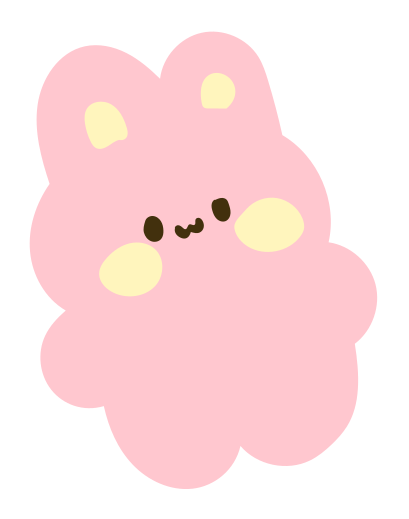
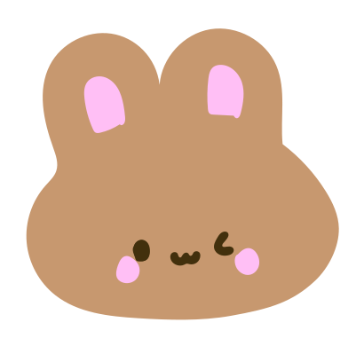
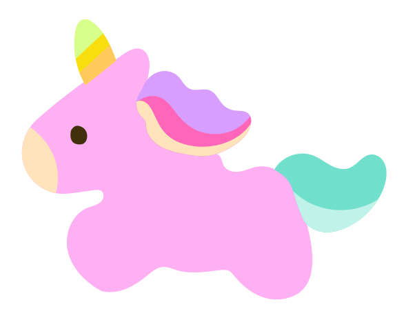
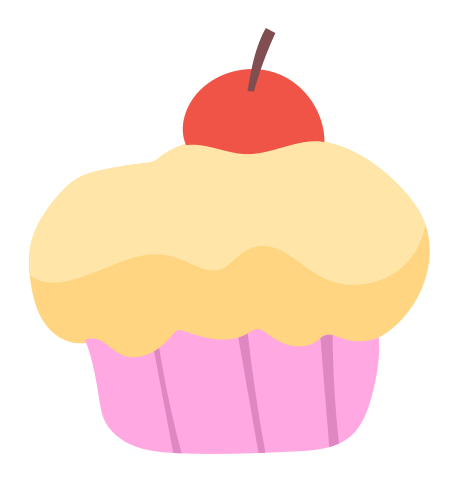

작가님 소개와 한 줄 안내를 넣는 첫 화면입니다.
아래 캐릭터들을 클릭해주세요!





현재 작업 일정을 실시간으로 확인할 수 있습니다.
어떤 작업인지, 어떻게 진행되는지 적어 두는 곳입니다.
원하는 영상 / 이미지를 한 장씩 크게 넘겨서 보여 줄 수 있습니다.
유튜브 영상으로 작업물을 확인할 수 있습니다.
문의 → 주문 → 완료, 흐름만 짧게 정리해 둡니다.
저작권이나 주문 전에 알아두면 좋은 내용을 모아 둡니다.